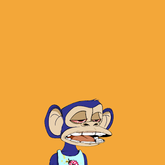

More about me:

I am currently a sophmore at The Ohio State University majoring in computer and information science.
I'm originally from Webster New York but am now living in Columbus Ohio to attend college.
I began my college career focused on cyber security and protecting virtual assets from data leaks or malware. More recently I have been
diving into the world of cryptocurrency, web 3.0, and NFTs.
My plan for involving myself in this movement is to create Ohio State's first blockchain technology club in the spring of 2022. The goal of this organization is not
to speculate what cryptos to invest in or what NFTs you should buy but rather, to educate
interested students on the basics how different blockchains work, different implementations (ie. bitcoin and etherium),
and how the technology can be applied in a realistic setting (ie. defi and NFTs). In the near future I will have a roadmap available but eventually it is my goal
to work with the club to create our own decentralized blockchain.
We will most likely start by using the proof of authority consensus model with myself and the other club leaders being the validators until we can grow the club enough to switch to a proof of stake model. Aside from having tokens the club members can earn from attending meetings, there can be proof of participation tokens given out for attending special events, and eventually I intend on collaborating with the art department to possibly mint NFTs for people to buy with their attendance tokens. This may lead to the start of a small marketplace but lets not get too far ahead of ourselves.
Another area I am interested in is game development. I spent the summer of 2021 teaching myself how to use unity and have been experimenting with 2D top down games as well as virtual reality. Most recently I attempted to create a VR zombie game during the HACK OHI/O event we had at our school. Unfortuanatly it was much more difficult than I anticipated and I didn't finish in time. However I really enjoyed the creative development aspect and the freedom I had to create whatever I wanted. In all honesty all aspects of computer science fascinate me and its the reason I am focusing my life on it.